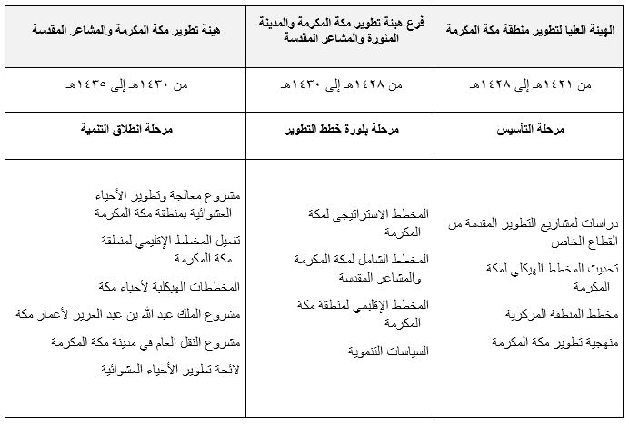

أنشأت هيئة تطوير مكة المكرمة والمشاعر المقدسة عام 1421هـ، للنهوض بمهمة التطوير والتنمية في مكة المكرمة من خلال إعداد المخطط الهيكلي للمنطقة المركزية وتحديث المخطط الهيكلي لمكة المكرمة وتنفيذ مشاريع التطوير الكبرى التي أعلن خادم الحرمين الشريفين الملك عبدالله بن عبدالعزيز حفظه الله انطلاقتها في الرابع والعشرين من رمضان 1425هـ.
ومرت مسيرة التطوير لمكة المكرمة والمشاعر المقدسة بعدة مراحل مختلفة استطاعت الهيئة خلالها وضع استراتيجيات وقواعد العملية التخطيطية في مكة المكرمة والمشاعر المقدسة، وأبرزت فيها المخطط الاستراتيجي والمخطط الإقليمي ثم المخطط الشامل لمكة المكرمة والمشاعر المقدسة الذي تعمل الأمانة العامة للهيئة على تفعيله في الوقت الحاضر
أن نعمل لأن تكون مكة المكرمة والمشاعر المقدسة أفضل وأعظم الاماكن في العالم وأكثرها تطورا ورقيا في جميع المجالات
نسعى لتحقيق التنمية والتطوير الشامل المستدام لمكة المكرمة والمشاعر المقدسة وفقا لخطط ودراسات وأساليب حكيمة ننفذها بالتكامل مع جميع الجهات ذات العلاقة
نتحلى بمكارم الاخلاق ونعمل سويا بعزيمة وإتقان , ونتعاون مع شركائنا لتطوير مكة المكرمة والمشاعر المقدسة

مهام هيئة تطوير مكة المكرمة والمشاعر المقدسة
تعتبر أحياء مكة المكرمة وخاصة المنطقة المحيطة بالمسجد الحرام ، عشوائية وغير مخططة ، وبناؤها قديم ، وتنقصها كثير من الخدمات ومنها الطرق ، ولكون أكثر طرقها أزقة ضيقة متعرجة ، مع ما فيها من كثافة سكانية وكثرة مرتاديها من مقيمين وحجاج ومعتمرين.
وتمشيا مع التوجه الكريم بإعطاء الأولوية للمنطقة المركزية في التنظيم نظرا لأهميتها ولكونها مقصد الجموع الغفيرة من الحجاج والمعتمرين والزوار، وما يقع فيها من الزحام الشديد وصعوبة الوصول للحرم، ولشدة الحاجة لإيجاد مساكن ملائمة تتوفر فيها الخدمات والطرق المريحة والآمنة لهذه الجموع الغفيرة، سواء للمشاة منهم أو وسائل نقلهم.
ونظرا لأن تنظيم هذه المنطقة هو الهدف الأهم من إنشاء هيئة تطوير مكة المكرمة والمشاعر المقدسة ، فقد كان لها النصيب الأوفر من اهتمام الهيئة ، وسيترتب على تنظيمها قيام مشاريع ضخمة وكبيرة في المنطقة.
وقد أدركت الهيئة أن تخطيط وتنظيم المنطقة المركزية غير ممكن بمعزل عن مشاركة الملاك فيها . وأن البرامج والمشاريع التطويرية لهذه المنطقة تتطلب مشاركة وتعاون جميع أطراف القطاع الخاص من : مطورين، ومستثمرين، وملاك للعقارات الواقعة ضمن مناطق العمل، مع مراعاة حقوق الجميع المادية والعينية والفكرية.
لذا فإن الهيئة وهي بصدد تبني تطوير المنطقة المركزية من خلال برامج ومشاريع يسهم في تنفيذها القطاع الخاص ، بتوجيه ودعم منها ، لتدعو جميع ملاك العقارات الواقعة ضمن مناطق العمل إلـى التعاون والمشاركة في التطوير مشاركة فعلية ، سيما وأن ذلك سيعود عليهم بالنفع والفائدة ، وسيحقق لهم مصلحة أكبر ورغبة من الهيئة في تحقيق تعاون جميع الملاك في المشاركة في التطوير، فإن هيئة تطوير مكة المكرمة والمشاعر المقدسة تقوم بالمهام التالية :
-
أولاً:
تقوم هيئة تطوير مكة المكرمة والمشاعر المقدسة بوضع وتحديث المخططات الهيكلية للمدينة والمشاعر المقدسة بصفة عامة، والتفصيلية للمنطقة المركزية، وآليات تنفيذها ، بصفة خاصة، والتنسيق بين الجهات المسئولة عن التخطيط والتنفيذ بمكة المكرمة، والمشاعر المقدسة . وسوف تقوم الهيئة باطلاع المطورين والمستثمرين والملاك لهذه المناطق علي المخططات المعتمدة بعد استكمال ذلك . كما ستشعر الهيئة الملاك والراغبين في التطوير والاستثمار بالضوابط والاشتراطات النظامية والفنية التي تحقق أهداف التطوير وتحفظ الحقوق .
-
ثانياً:
وضع القواعد الملائمة للتصرف في عقارات المناطق الخاضعة للتطوير :
من المتوقع أن تتحول المنطقة المركزية بعد تخطيطها وتنظيمها إلى وحدات عقارية متباينة المساحة، ومنفصل بعضها عن بعض، وتتكون كل وحدة من ملك واحد أو مجموعة من الأملاك المتنوعة. وعليه فإن الهيئة ترى أن يكون التصرف في الوحدات على ما يلي :
- إذا كانت الوحدة العقارية مملوكة بالكامل لمالك واحد أو وقفاً، فتسلم لصاحبها ليتصرف فيها بما يتفق مع متطلبات التخطيط والتنظيم، فإن لم يرغب في المشاركة في التطوير نقدا أو عينا حسب الحال . فإنه لا يستفيد من المزايا التطويرية، وإذا ظهرت مصلحة عامة فإن الهيئة تعوضه وتوقف العقار على الحرم المكي والمشاعر المقدسة ، وتطرحه في منافسة عامة للاستثمار .
- إذا كانت الوحدة العقارية بكاملها مرفقا عاما أو ملكا من أملاك الدولة، فيجري وقفها على الحرم المكي والمشاعر المقدسة ثم تطرح في منافسة عامة للاستثمار .
- إذا كانت الوحدة العقارية مشتركة بين ملاك يمكن اتفاقهم وتراضيهم ، سواء بتكوين شركة بينهم ، أو بيع بعضهم على بعض أو على الغير ، أو باتفاقهم مع مستثمر ، مع التزامهم بالمشاركة في التطوير ، فيمهلون لتحقيق ذلك مدة سنة ، فإن لم يتفقوا فيعوض أصحابها، ويجري وقفها على الحرم المكي والمشاعر المقدسة، ثم تطرح في منافسة عامة للاستثمار وفي حال موافقة البعض فتنزع حصة الممتنع، وللشركاء الأولوية .
- إذا كانت الوحدة العقارية مشتركة بين مرافق عامة وأوقاف وملاك متعددين يتعذر تراضيهم واتفاقهم ، فيعوض أهل الأوقاف والأملاك الخاصة، وتوقف على الحرم المكي والمشاعر المقدسة ثم تطرح في منافسة عامة للاستثمار .
- إذا نزع عقار ورغب مالكه إبداله بموقع آخر ضمن الموقع المطور، فله ذلك إذا أبدى رغبته في المشاركة في عملية التطوير عينا أو نقدا وكان ذلك ممكنا.
- إذا ظهرت حالات أخرى غير ما ذكر أعلاه فتدرس من قبل هيئة تطوير مكة المكرمه والمشاعر المقدسة .
-
ثالثاً:
-
نزع الملكيات :
يتم نزع الملكيات للعقارات الواقعة في المنطقة المركزية، إذا اقتضى الحال ذلك ، وفقا لنظام نزع الملكيات للمصلحة العامة ،وتوقف على الحرم المكي والمشاعر المقدسة، وتطرح المواقع الموقوفة للاستثمار .
-
تعويض الملاك :
يتم تعويض الملاك من ميزانية الدولة متى ما توفرت الاعتمادات الكافية في الميزانية . وإلا فتتولى ذلك الهيئة من المبالغ المتحصلة من استثمار المواقع الموقوفة ومن المشاركين في التطوير.
-
نزع الملكيات :
-
رابعاً
تقوم الهيئة بالتواصل مع كل مستثمر يرغب بالاستثمار في العملية التطويرية لمكة المكرمة وسوف تسعى الهيئة لحث المستثمرين على التقدم لها للاستفادة من الفرص و المشاريع التي ستطرحها فـي مكة المكرمة بناء على آليات محددة .